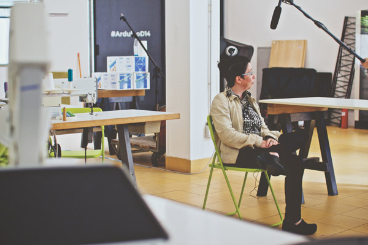

- Event Listeners

Zoe Romano
Zoe Romano is a co-founder of WeMake, an makerspace in Milan. It is a workshop focused on creating innovation at the intersection between digital manufacturing, wearable technology and the development of local fashion brand communities using open-source technology. The goal is to connect local production with local brands, and to enable collaboration between smaller fashion labels. She also joined the Arduino team to contribute on digital strategy and lead projects on wearables.
"It’s now easier and easier to move from object to data and from data to an object."
- 
"Right now I see coders and engineers on one hand, and then I have friends working in fashion who don’t know anything about digital fabrication techniques. I’m trying to merge these types of people and make them work together."
This interview was conducted by Aaron La Lau and Sean Brouwer
Introduction
WeMake
Milan Fashion
Open Web
Making in Italia
0:00
/
0:00